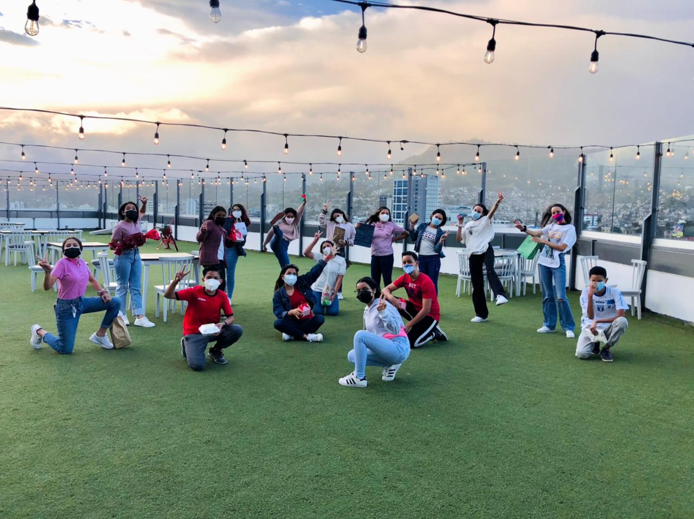
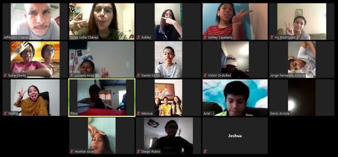

And what it is Youth Vision you may be asking, well... We are a group of teenagers that has a
different vision as the world sees how is to

be a teenager. This age
is the part of your life in which you set how will your character be, what will you study
what you want to be etc. but we see that you can discover and define your character and thinks that
you love to do knowing and following Gid and obeying his word. Beacuse of all this changes being a
a teenager may be confusing, frustrating, disappointing etc. and God can guide Us in his paths,
how to control all of this emotions, and how not letting this ones don´t take control of our lifes.
Many people thinks being a follower of Christ is borring and that it takes you all of your time but
that is a wrong idea, actually it is quite the opposite...

They are plenty of things you can do
without displeasing God, or disobeying his word and even serving and giving him honor.
Youth Vision has Social media and now a Web Page to cath all the attention of teenagers possible
to get them to know how they can change there lifestyle to a maner that honors God, and to get them
to know how Much he loves each one of us! By having activities such as Zoom meetings in where we play, talk
with others, and receive devotionals and learn about of God and his word. This online meetings start beingorganizes
due to corornavirus */*/*cuarintinet/*/*/ but now each month we are having in person meetings again!